LiDAR geometry
Captures the spatial structure perceived by navigation. It is also the attacked channel in the false-obstacle scenario.
Cyber-physical security · 2024–2026
Can an autonomous robot detect behavior that is individually plausible in one modality but inconsistent across its physical and network traces?
Across two publications, this research progressed from a three-modal U-ASTROD system—LiDAR, odometry, and network traffic—to a more compact domain-informed detector using LiDAR-derived features and wheel velocities. Both studies evaluate attacks against autonomous robot operation rather than only synthetic tabular data.
Abstract
A stealthy false obstacle may look legitimate in the point cloud. It is harder for that same attack to remain consistent with robot motion and the network activity that delivered it. The detector learns those cross-modal relationships from normal operation.
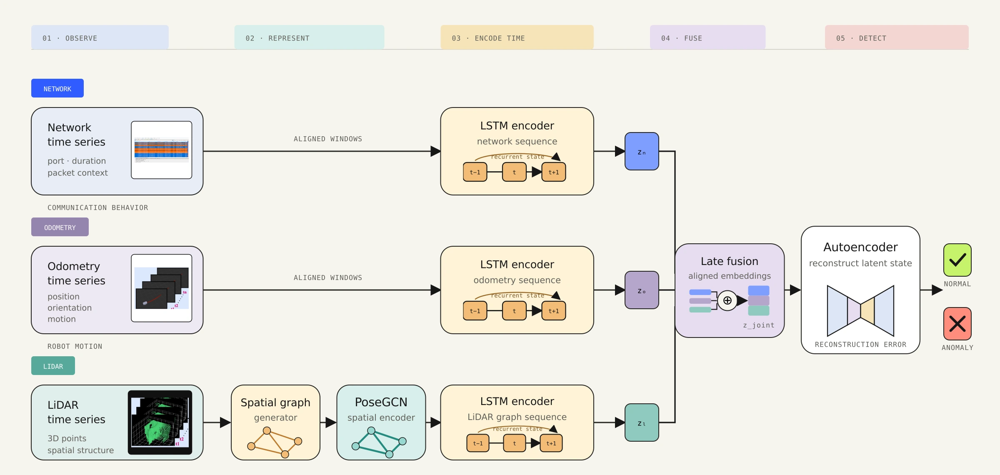
Threat model
A man-in-the-middle attack intercepts the robot’s ROS point-cloud stream and injects false obstacles. The autonomy stack reacts to a scene that does not exist. LiDAR alone may accept the modified observation; odometry and network traffic provide independent context.
Captures the spatial structure perceived by navigation. It is also the attacked channel in the false-obstacle scenario.
Reveals how the robot actually moved in response to the perceived environment.
Exposes communication patterns that can change when messages are intercepted, altered, or replayed.
The attack is visible at several levels: the cyber interception path, the falsified point cloud, and the robot’s resulting physical response.
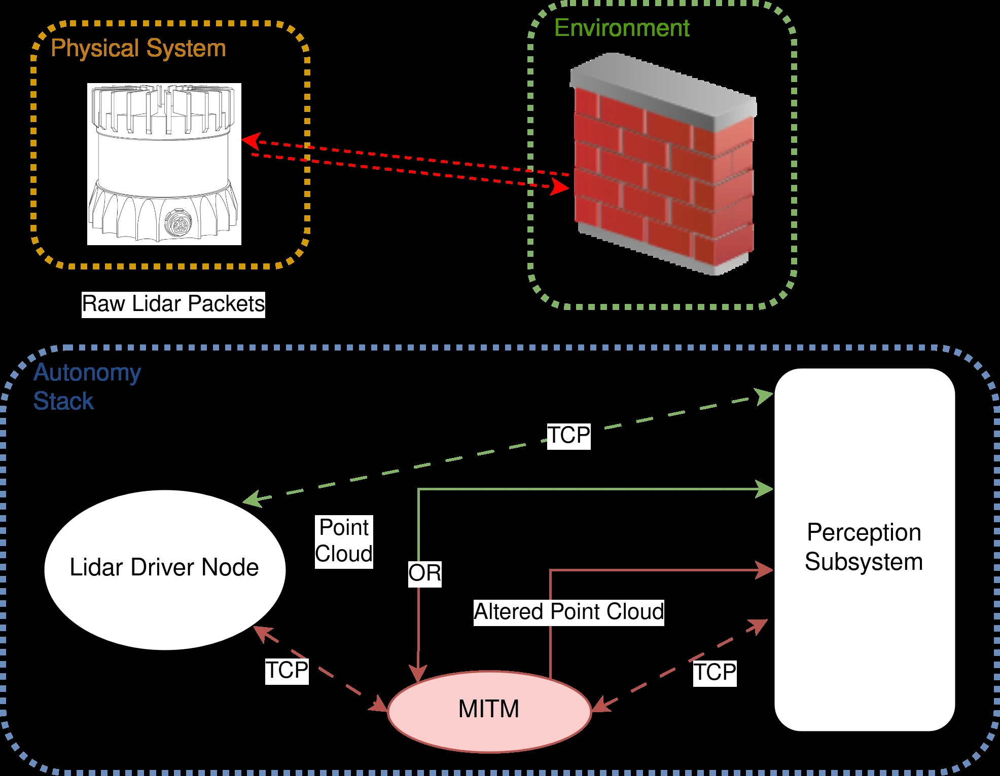
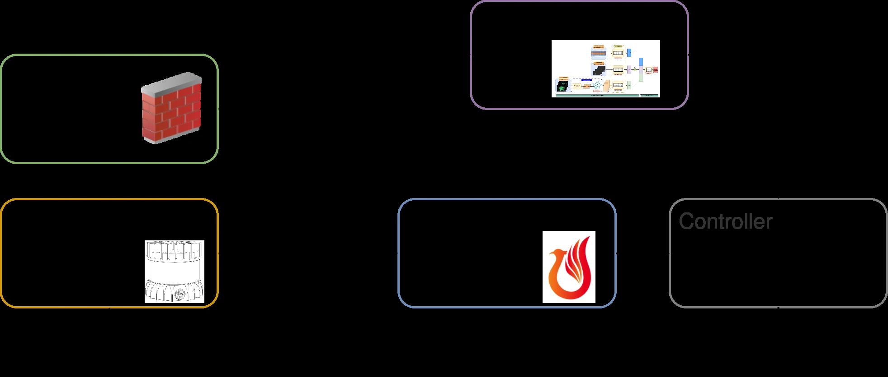


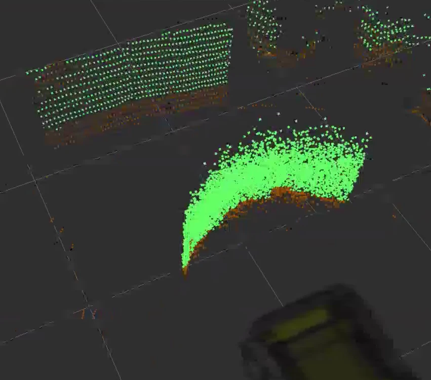
Model
Each modality has different structure and sampling behavior. The architecture therefore avoids early raw-feature concatenation: LiDAR geometry and sequential signals are encoded through modality-appropriate branches before a shared normal-behavior model.
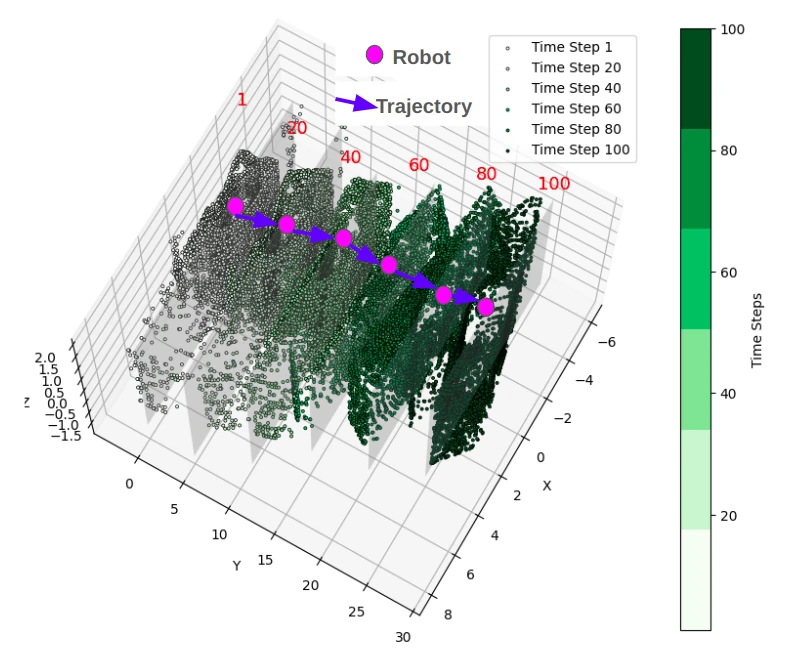
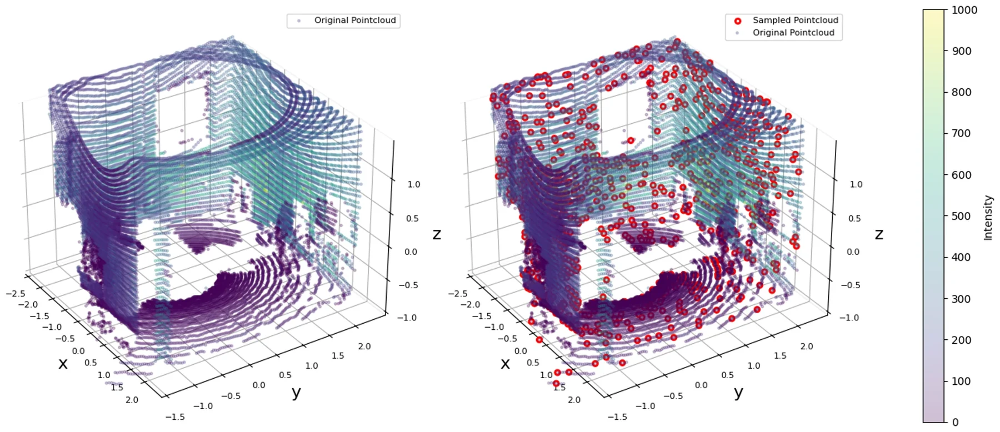
The autoencoder is trained on nominal robot operation. At inference, reconstruction error measures how far the observed multimodal state lies from the learned normal manifold.
anomaly ⇐ ‖V − AE(V)‖² > τ
A single scalar average can dilute a strong deviation in one feature when many others reconstruct well. The vector-based loss preserves individual feature contributions before the final decision, improving sensitivity to subtle cross-modal inconsistency.
| Design choice | Alternative | Reason |
|---|---|---|
| Modality-specific encoders | Raw early concatenation | Preserve geometry and temporal structure before fusion. |
| Late multimodal fusion | LiDAR-only detection | An attacker must remain consistent across partially independent channels. |
| Unsupervised normal training | Supervised attack classification | Does not require examples of every future attack during training. |
| Vector reconstruction score | Scalar mean loss | Prevents local feature deviations from being averaged away. |
Experimental system
The evaluation instrumented a custom autonomous UGV platform and collected normal and attacked runs across its physical and cyber traces.
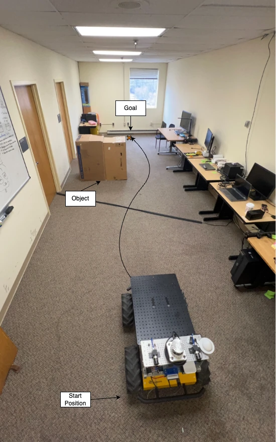
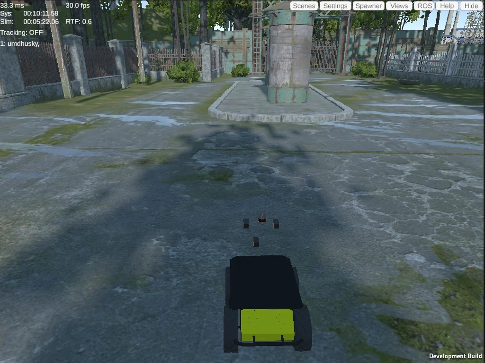
Synchronize LiDAR, odometry, and observable network traffic while the Husky executes its navigation stack.
Train the modality encoders and shared autoencoder without requiring attack labels.
MITM manipulation introduces false obstacle evidence into the ROS point-cloud channel and changes the robot’s navigation behavior.
Evaluate standard scalar loss against vector-based feature scoring on the real-platform attack sequences.
Repeat the training condition with half of the original data to test whether multimodal redundancy remains useful when data are constrained.
Published results
The strongest result is not the headline accuracy alone. It is that cross-modal structure and feature-preserving reconstruction remain effective even after the nominal training set is reduced to 92 samples.
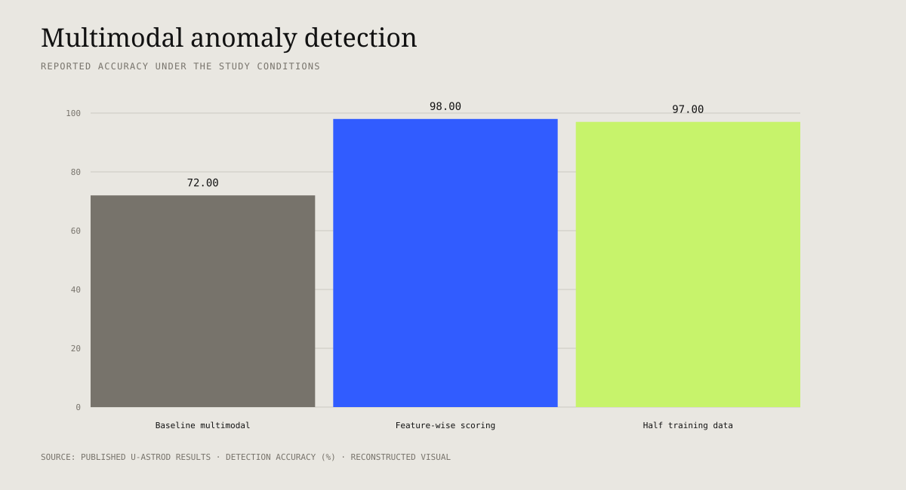
PCA projections make the modality argument inspectable. Attack 1 produces clearer separation; the stealthier Attack 2 compresses the LiDAR distinction while odometry and network structure remain useful contextual evidence.
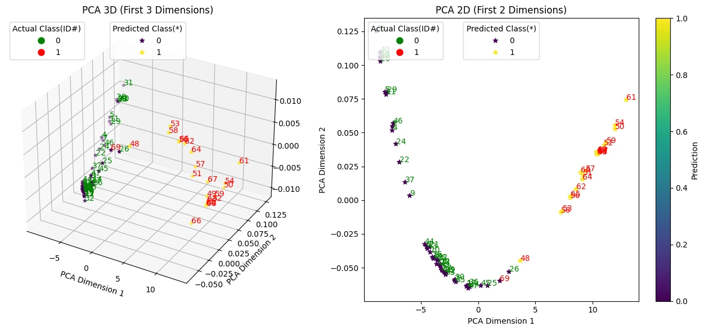
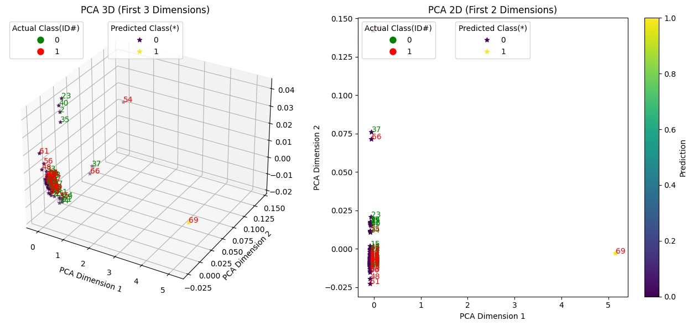
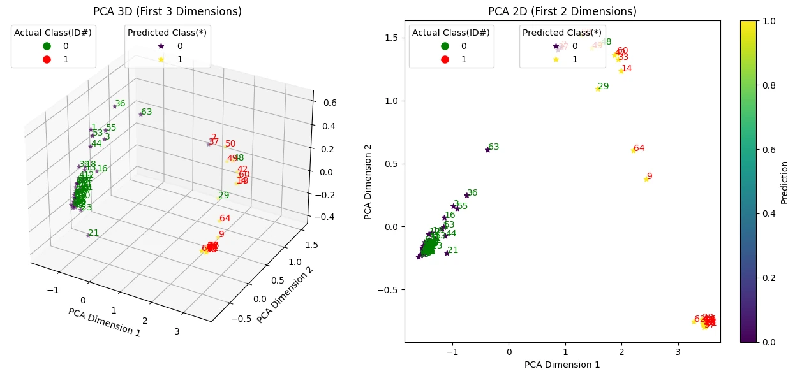
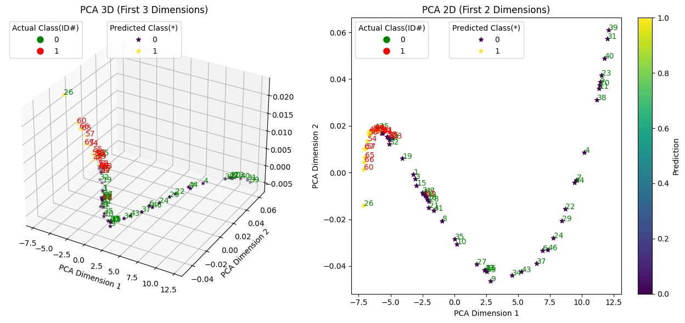
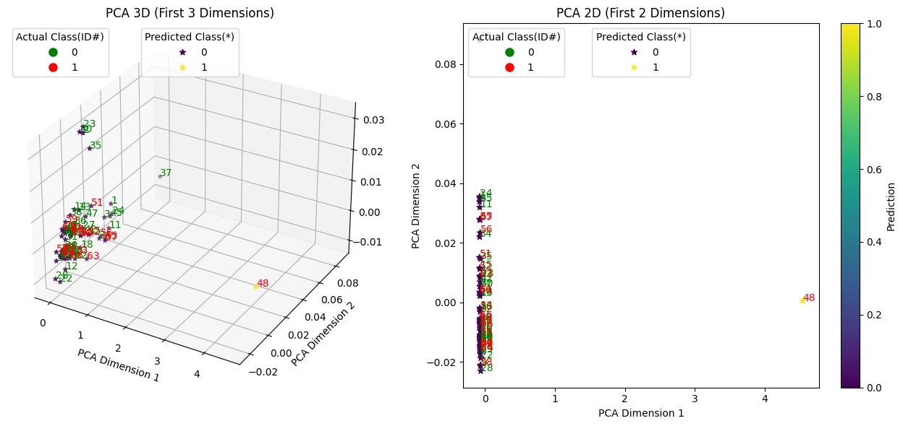
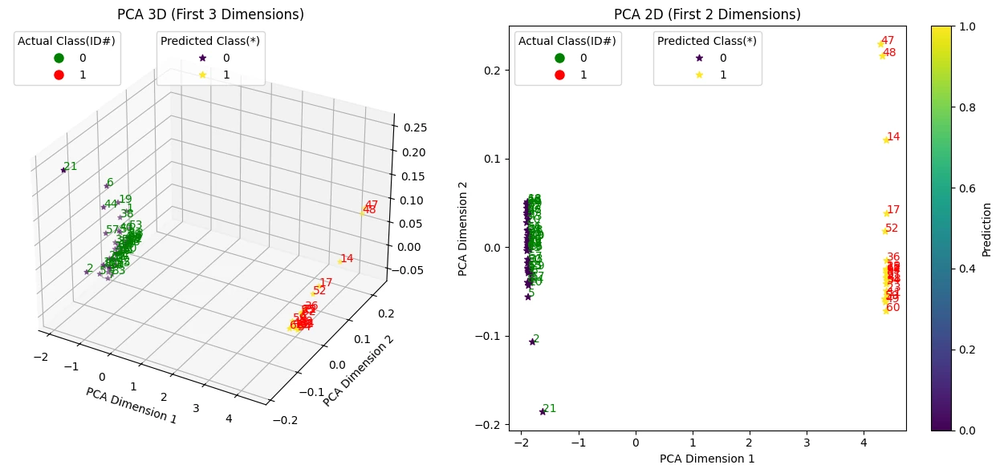
| Condition | Training data | Accuracy | Interpretation |
|---|---|---|---|
| Standard scalar reconstruction score | Full study condition | 72% | Averaging reconstruction error can suppress subtle feature deviations. |
| Vector-based multimodal score | Full study condition | Up to 98% | Feature-wise contributions improve attack sensitivity in the reported setup. |
| Vector-based multimodal score | 50% · 92 samples | 97% | Cross-modal redundancy retained performance under constrained nominal data. |
These values expose why late fusion matters: the attacked modality can be highly discriminative in one attack and degrade substantially in a stealthier variation, while secondary modalities provide different evidence.
| Attack | Modality | Accuracy | F1 | ARR | NPR |
|---|---|---|---|---|---|
| Attack 1 | LiDAR | 1.000 | 1.000 | 1.000 | 1.000 |
| Attack 1 | Odometry | 0.952 | 0.951 | 0.830 | 1.000 |
| Attack 1 | Network | 0.940 | 0.940 | 0.920 | 0.957 |
| Attack 2 | LiDAR | 0.860 | 0.870 | 0.600 | 1.000 |
| Attack 2 | Odometry | 0.952 | 0.951 | 0.830 | 1.000 |
| Attack 2 | Network | 1.000 | 1.000 | 1.000 | 1.000 |
2026 continuation
The IEEE ROSE study retained the central cross-modal idea while using a compact architecture built around LiDAR-derived features and wheel velocities. It expanded evaluation to indoor, outdoor, unseen-attack, temporal-window, and cross-environment conditions.
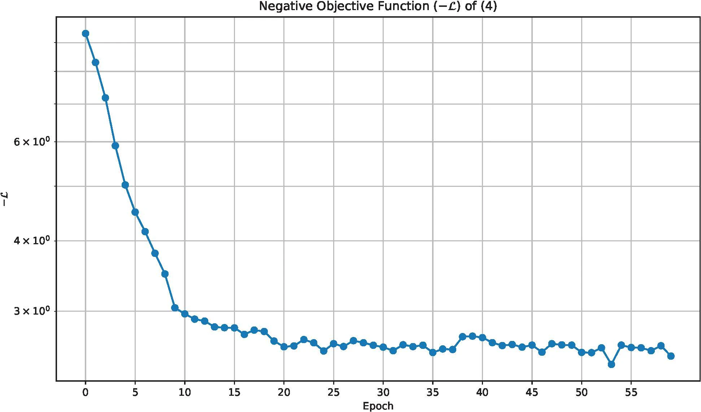
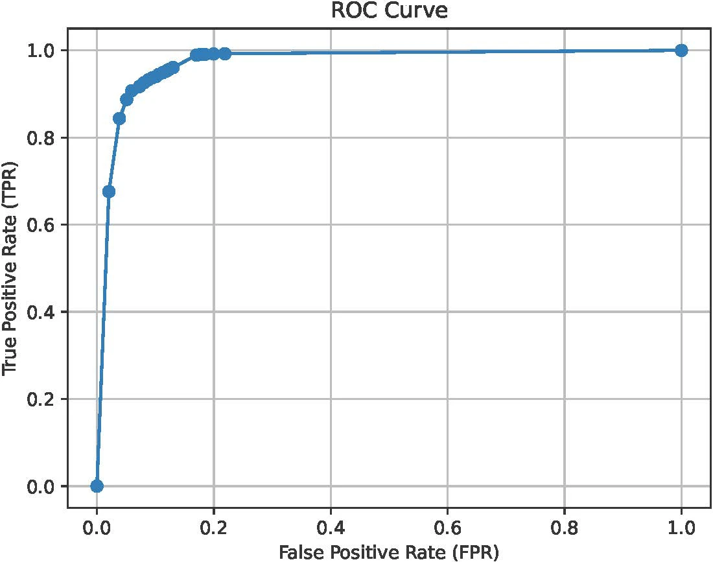
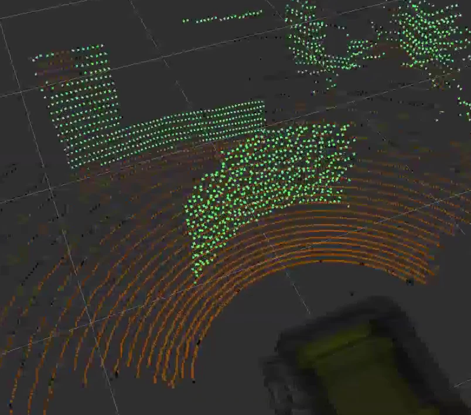
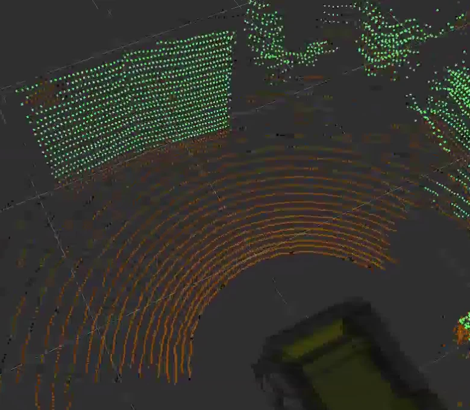

The most useful test is not the strongest in-distribution number. It is whether a detector trained in one environment preserves attack sensitivity in another.
| Training → testing | Normal W=1 | Normal W=10 | Baseline W=1 | Baseline W=10 | Stealthy W=1 | Stealthy W=10 |
|---|---|---|---|---|---|---|
| Indoor → outdoor | 97.75 | 82.14 | 80.53 | 99.32 | 82.47 | 88.68 |
| Outdoor → indoor | 70.76 | 82.38 | 87.97 | 95.30 | 94.76 | 96.46 |
Zoulkarni, A., Noorani, M., Baras, J. S., Mirenzi, J., Puthanveettil, T. V., and Grody, C. D. “Efficient Integration of Domain Knowledge and Data-Driven Methods for Securing Autonomous Cyber-Physical Systems.” IEEE ROSE, 2026. DOI: 10.1109/ROSE69181.2026.11570974.Contribution and boundaries
This research belongs to the larger U-ASTROD program and was supported by the Army Research Laboratory under Cooperative Agreement W911NF-23-2-0040.
I architected the multimodal sequential fusion pipeline used by the larger system.
My core contribution was the model architecture that independently represented LiDAR, odometry, and network sequences before fusing them for shared anomaly detection. The robot platform, attack infrastructure, dataset creation, broader research program, and publication were collaborative; all co-authors are credited above.
Limitations. The study uses one UGV and a bounded attack library. Network features assume traffic is observable. The detector reports abnormality rather than attack semantics, and performance under unseen platforms, sensor suites, benign distribution shifts, adaptive attackers, and long-duration operation remains open.
Noorani, M., Puthanveettil, T. V., Zoulkarni, A., Mirenzi, J., Grody, C. D., and Baras, J. S. “Multimodal Anomaly Detection for Autonomous Cyber-Physical Systems Empowering Real-World Evaluation.” GameSec 2024, LNCS 14908, pp. 306–325. DOI: 10.1007/978-3-031-74835-6_15.